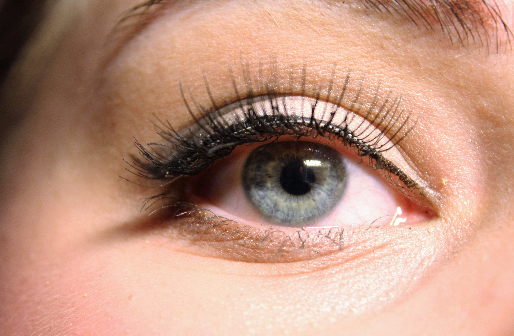
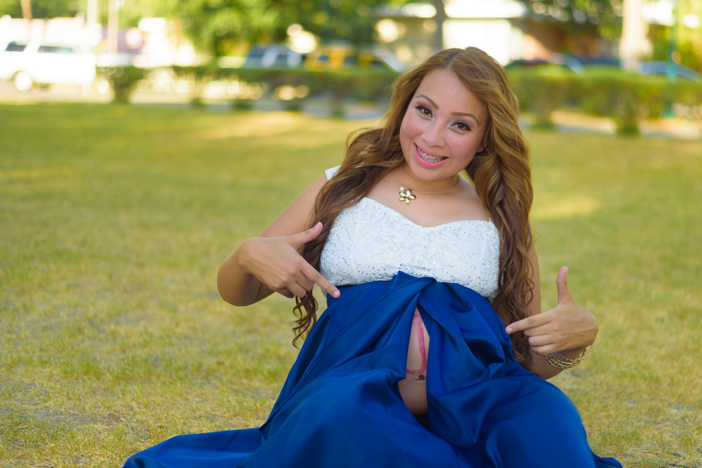

Te presentamos una buena manera de arrancar tu Primera sesion con Lashista
Limpieza y Sin Maquillaje:
Comunica tus Preferencias:
Tiempo para Relajarse:
Sensaciones Normales:
Mantenimiento:
Retoques:
¡Relájate y Disfruta!
expand_circle_down
¿Cómo hacer un adecuado mantenimiento?

Mantenimiento y cuidados
Un buen mantenimiento te permite lucir fresca y hermosa en todo momento. Desde
sericiosLashista te recomendamos
programar service regulares siguiendo las pautas recomendadas.
versión
Te presentamos nuestra guía de mantenimiento para tus pestañas
Evita el agua y el vapor en las primeras 24 horas:
Durante las primeras 24 horas después de la aplicación de extensiones de pestañas, es crucial
que evites el agua y el vapor. Esto permite que el adhesivo se cure completamente. Evita
ducharte, nadar o entrar en saunas durante este período. Si puedes, evita maquillarte
también.
Limpieza diaria con cuidado:
A partir del segundo día, comienza a limpiar tus pestañas diariamente. Usa un limpiador
suave, preferiblemente uno específico para extensiones de pestañas, o simplemente agua
tibia. Limpia con movimientos suaves, sin frotar ni tirar de las extensiones. Asegúrate de
eliminar cualquier residuo de maquillaje, aceite o suciedad que pueda acumularse en tus
pestañas.
Usa un cepillo para pestañas:
Cepilla tus pestañas con un cepillo específico para pestañas diariamente. Esto ayuda a
mantenerlas separadas y libres de enredos.
Evita productos a base de aceite:
Evita productos a base de aceite en la zona de los ojos. Los aceites pueden aflojar el
adhesivo y hacer que las extensiones se desprendan antes de tiempo. Opta por productos
libres de aceite si es necesario.
No jales tus extensiones:
Evita tocar o jalar tus extensiones de pestañas. Esto podría dañar tus pestañas naturales o
hacer que las extensiones se caigan antes de lo previsto.
Programa rellenos regularmente:
Las extensiones de pestañas tienen un ciclo de vida natural. Necesitarás programar rellenos
para mantener tu mirada fresca. Esto generalmente se hace cada 2-3 semanas, pero puede
variar según la velocidad de crecimiento de tus pestañas naturales.
Evita rímel a prueba de agua:
Si decides usar rímel, opta por una fórmula a base de agua y no a prueba de agua. Los
productos a prueba de agua son más difíciles de eliminar y pueden debilitar el adhesivo.
Sé cuidadosa al dormir:
Duerme de espaldas o de costado para evitar que tus extensiones de pestañas se froten contra
la almohada. Una mascarilla de dormir de seda puede ayudar a reducir la fricción.
Programa un servicio de eliminación adecuado:
Si decides que ya no deseas extensiones de pestañas, programa un servicio de eliminación con
un lashista profesional. No intentes quitarlas por ti misma, ya que esto podría dañar tus
pestañas naturales.
Siguiendo estos pasos, podrás mantener tus extensiones de pestañas en excelente estado y
disfrutar de una mirada hermosa y duradera. Recuerda que es esencial programar rellenos de
manera regular y cuidar tus extensiones con suavidad para mantener la apariencia fresca y
natural.
expand_circle_down
¿Puedo hacerme las pestañas durante el embarazo?

Embarazo
La aplicación de extensiones de pestañas no está generalmente recomendada para mujeres
embarazadas. Aquí hay algunas razones por las cuales no se suele aconsejar este procedimiento
durante el embarazo.
Recomendaciones desdeServiciosLashistapara el embarazo
Sensibilidad:
Durante el embarazo, las mujeres pueden experimentar un aumento en la sensibilidad ocular y
la piel. La zona de los ojos puede volverse más propensa a irritaciones y alergias. La
aplicación de extensiones de pestañas implica el uso de adhesivos y otros productos que
podrían causar molestias o reacciones alérgicas.
Posición Incómoda:
Durante el procedimiento de aplicación de extensiones, la futura mamá debe acostarse boca
arriba con los ojos cerrados durante un período prolongado. Esto puede resultar incómodo,
especialmente en etapas avanzadas del embarazo.
Productos Químicos:
Los adhesivos y productos utilizados en la aplicación de extensiones de pestañas pueden
contener ciertos productos químicos que podrían no ser seguros para el feto. Aunque la
mayoría de los adhesivos están diseñados para ser seguros y de baja toxicidad, existe un
riesgo potencial, y se prefiere evitar cualquier posible exposición a productos químicos
innecesarios durante el embarazo.
Cambios Fisiológicos:
Durante el embarazo, el cuerpo de una mujer experimenta una serie de cambios hormonales y
fisiológicos. Estos cambios pueden afectar la textura y el crecimiento de las pestañas
naturales, lo que podría influir en los resultados de la aplicación de extensiones.
Molestias Después del Parto:
Las extensiones de pestañas requieren un mantenimiento regular, que implica retoques y
llenados. Las nuevas mamás pueden encontrar difícil dedicar tiempo a las citas de retoque en
las primeras semanas o meses después del parto, lo que podría llevar a una apariencia
desigual de las extensiones.
Si bien no hay evidencia concluyente de que la aplicación de extensiones de pestañas sea
perjudicial para el feto, se opta por la precaución al evitar este procedimiento durante el
embarazo. Las mujeres embarazadas deben consultar con sus médicos y lashistas para obtener
orientación personalizada sobre si es seguro o no aplicar extensiones de pestañas durante
esta etapa de la vida.
expand_circle_down
¿Cuánto tiempo dura el procedimiento de aplicación?
La duración típica es de 2 a 4 horas, dependiendo del estilo y la cantidad de extensiones.
expand_circle_down
¿Es seguro el proceso de aplicación?
Sí, el proceso es seguro siempre que se realice por un profesional capacitado y se utilicen
productos de alta calidad.
expand_circle_down
¿Cuánto tiempo duran las extensiones de pestañas?
Por lo general, las extensiones duran unas 4 semanas, pero se recomienda el relleno cada 2-3 semanas
para mantener el aspecto.
expand_circle_down
¿Puedo maquillarme con extensiones de pestañas?
Sí, pero es recomendable utilizar maquillaje sin aceite y evitar el rimel a base de aceite para
prolongar la duración de las extensiones.
expand_circle_down
¿Cómo elijo un estilo adecuado para mí?
Si aun no conoces tu estilo o no sabes por cual decidirte podés consultar a tu lashista, quien va
identificar la mejor opción para vos. Nuestras especialistas estan especialmente calificadas para
darte una vision mas acertada en esta tarea. También podes encontrar tu estilo en la seccion de efectos.